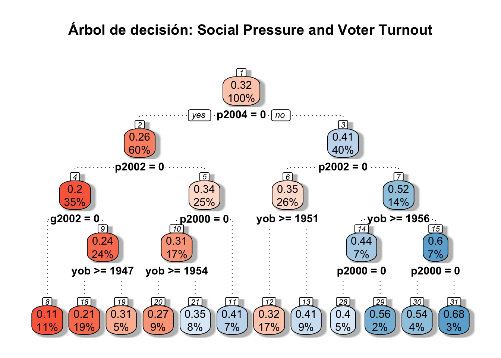

Decision Trees - CART
by Angelo Muñoz y Andrés Fernández Vergara
\[\\[1in]\] # 1. Árboles de decisión
Objetivo
En este módulo estudiaremos el uso de árboles de decisión para problemas de regresión y clasificación como modelo predictivo de Machine Learning.
Data
Los datos provienen del artículo “Social Pressure and Voter Turnout: Evidence from a Large-Scale Field Experiment” de Gerber, Green y Larimer (2008) (Ver el artículo). El artículo trata sobre un estudio de campo en el que los votantes registrados en los EE. UU. fueron seleccionados al azar y recibieron cartas motivándolos a votar. Como el papel electoral en Estados Unidos es público y se puede consultar quién votó, los investigadores pudieron analizar el efecto de las cartas en la participación de los votantes. Los datos contienen variables relativas al tratamiento (\(W\)), respuesta (\(Y\)) y características observables de los votantes (\(X\)).
En la base, mostrada a continuación, \(Y\) es la variable de resultado (votar o no votar) en la elección general del año 2004, \(W\) es la variable de tratamiento (carta recibida) y el resto de las variables son covariables \(X\), principalmente sobre el comportamiento de voto en elecciones anteriores.
A continuación vemos una vista previa de la base de datos:
## # A tibble: 40,000 × 16
## ...1 X1 id cluster hh_id hh_size Y W sex yob g2000
## <dbl> <dbl> <dbl> <dbl> <dbl> <dbl> <dbl> <dbl> <fct> <dbl> <fct>
## 1 207512 207512 207512 6036 108633 2 0 0 1 1986 0
## 2 98909 98909 98909 2848 51252 1 0 0 0 1961 1
## 3 195936 195936 195936 5688 102384 1 1 0 1 1951 1
## 4 327755 327755 327755 9501 171008 1 1 1 0 1950 1
## 5 62368 62368 62368 1798 32358 2 1 1 0 1963 1
## 6 25548 25548 25548 750 13493 2 0 0 1 1957 0
## 7 232264 232264 232264 6766 121780 2 0 0 0 1948 1
## 8 97292 97292 97292 2802 50420 3 0 1 0 1984 0
## 9 131465 131465 131465 3793 68266 1 1 0 0 1931 1
## 10 124791 124791 124791 3597 64740 1 1 1 0 1934 1
## # … with 39,990 more rows, and 5 more variables: g2002 <fct>, p2000 <fct>,
## # p2002 <fct>, p2004 <fct>, p2004_mean <dbl>| Variable | Descripción |
|---|---|
| id | Identificador Votante |
| Y | Si vota (1) o no (0) en elección general 2004 |
| W | Si recibe carta (1) o no (0) antes de votación general de 2004 |
| sex | Sexo del votante: Mujer (1) y Hombre (0) |
| yob | Año de nacimiento del votante |
| g2000 | Si votó en las elecciones generales de 2000 (1) o no (0) |
| g2002 | Si votó en las elecciones generales de 2002 (1) o no (0) |
| p2000 | Si votó en las elecciones primarias de 2000 (1) o no (0) |
| p2002 | Si votó en las elecciones primarias de 2002 (1) o no (0) |
| p2004 | Si votó en las elecciones primarias de 2004 (1) o no (0) |
| p2004_mean | Porcentaje de votación en su estado para la elección primaria 2004 |
División de la información
Para fines de modelar el comportamiento de votación, dividimos la base de datos en un 70% para el ajuste de un árbol de decisión y un 30% para la predicción de un árbol de decisión.
# División de los datos: entrenamiento con 70%
my_data_train = my_data %>% sample_frac(0.70)
# División de los datos: test, separando de la muestra completa lo que no es entrenamiento.
my_data_test = anti_join(my_data, my_data_train, by = 'id')No hay un valor predeterminado para escoger en cuanto a la separación de la muestra. Puede utilizarse una separación de 50/50 como una de 99/1, sin embargo, se debe tener en cuenta de que a mayor muestra de entrenamiento existe mayor riesgo de sobreajustar el modelo, y a menor muestra de entrenamiento comienza a ocurrir un riesgo de subajuste del modelo.
\[\\[1in]\] # 2. Estimación
La metodología de árboles de decisión está implementada en el paquete rpart del prgrama R. La función principal es rpart() y habitualmente se emplea de la siguiente forma:
rpart(formula=, data=, method=, control=, ...)Donde:
formula: recibe como input una fórmula en R, del estilo “Y ~ X1 + X2”, y permite especificar el modelo. En R se puede utilizar la fórmula ” Y ~ .” donde el punto representa todas las covariables de la base de datos.
data: recibe como input la base (data frame) donde se aplicará el modelo. Debe tenerse en cuenta que para entrenar, la muestra debe ser la de entrenamiento, y para predecir, debe usarse la muestra de evaluación.
method: método empleado para realizar las particiones del árbol, puede ser “anova” (regresión) o “class” (clasificación), u otras. El método a escoger dependerá de la naturaleza de las variables del modelo.
control: lista de opciones que controlan el algoritmo de partición como método de detención (stopping). Esta función permite poner un límite de observaciones en cada una de las hojas finales (minbucket) o en los nodos intermedios (minsplit). Al mismo tiempo, es esta función la que permite incorporar funciones de costo de complejidad de poda. Para usarlo, se puede imputar en la llamada de función principal o utilizando la función rpart.control(). Por ejemplo:
rpart.control(cp = , minsplit = , minbucket = , ...)\(cp\) es el parámetro de costo de complejidad (\(\alpha\)) que permite buscar el subárbol óptimo según el número de hojas. El parámetro de penalización se mueve en un rango entre 0 (un árbol con profundidad máxima) y 1 (un árbol sólo con raíz).
\(minsplit\) y \(minbucket\) son los parámetros para fijar números mínimos de observaciones en nodos intermedios y terminales, respectivamente.
A continuación, usted podrá implementar un árbol de decisión, considerando todas las covariables para explicar \(Y\), variando el parámetros \(cp\). El parámetro \(minbucket\) se fijará en 10. Observe lo que ocurre con la gráfica del árbol cuando varía el valor del ponderador de penalización.
En el árbol, en la parte superior de cada nodo, se presenta la respuesta media de \(Y\) (porcentaje de votación) del nodo y, en la parte inferior de cada nodo, se presenta el porcentaje de muestra en el nodo. Bajo el gráfico se presenta el MSE del árbol completo. Recordamos que este indicador tiene la forma \(MSE = \sum^N_i (y_i - \hat(y)_i)^2\). Es decir, un promedio de cuánto se equivocan las predicciones de cada dato (en la muestra de evaluación o de entrenamiento).
## [1] "0.2015"
\[\\[1in]\] # 3. Buscando el número óptimo de hojas Al variar el ponderador de costo de complejidad, varía el largo del árbol. Para cada valor de costo \(cp\) se genera un árbol, y por lo tanto, se puede estimar la efectividad de cada árbol de predicción de acuerdo al indicador \(cp\). Esta efectividad puede medirse a partir del valor de la \(K-fold Cross Validation\). Esto consiste en tomar K divisiones y entrenar el modelo con todos menos el K-ésimo grupo; en cambio, el grupo número K se utiliza para evaluar el modelo. Luego se promedian los K valores de MSE evaluados para obtener un valor del proceso.
Lo que haremos entonces será graficar el valor de \(K-fold CV\) de evaluación para cada uno de los árboles generados por los valores de \(cp\) y su número de nodos. Puedes variar el número \(K\) que quieras darle a la validación. A mayor número de validaciones cruzadas, aumenta la carga computacional y el tiempo que tarda en el cálculo.

## NULL##
## Regression tree:
## rpart(formula = Y ~ sex + yob + g2000 + g2002 + p2000 + p2002 +
## p2004 + p2004_mean, data = my_data_train, control = rpart.control(xval = 5,
## minbucket = 10, cp = 1e-04))
##
## Variables actually used in tree construction:
## [1] g2000 g2002 p2000 p2002 p2004 p2004_mean sex
## [8] yob
##
## Root node error: 6052.8/28000 = 0.21617
##
## n= 28000
##
## CP nsplit rel error xerror xstd
## 1 0.02400596 0 1.00000 1.00012 0.0047290
## 2 0.01324225 1 0.97599 0.97613 0.0048790
## 3 0.01205975 2 0.96275 0.96533 0.0049087
## 4 0.00501114 3 0.95069 0.95110 0.0050177
## 5 0.00348732 4 0.94568 0.94604 0.0049540
## 6 0.00182138 5 0.94219 0.94382 0.0049979
## 7 0.00179871 6 0.94037 0.94315 0.0050388
## 8 0.00171132 7 0.93857 0.94315 0.0050449
## 9 0.00146766 8 0.93686 0.94009 0.0050529
## 10 0.00144561 9 0.93539 0.93894 0.0050561
## 11 0.00089291 10 0.93395 0.93707 0.0050785
## 12 0.00079682 11 0.93306 0.93613 0.0050867
## 13 0.00078711 12 0.93226 0.93576 0.0050896
## 14 0.00076520 13 0.93147 0.93576 0.0050896
## 15 0.00068313 14 0.93071 0.93584 0.0050862
## 16 0.00064885 15 0.93002 0.93538 0.0050898
## 17 0.00064001 16 0.92937 0.93545 0.0050936
## 18 0.00059738 17 0.92873 0.93494 0.0050901
## 19 0.00059592 18 0.92814 0.93459 0.0050920
## 20 0.00048355 19 0.92754 0.93381 0.0050933
## 21 0.00047121 20 0.92706 0.93361 0.0051012
## 22 0.00041498 21 0.92659 0.93365 0.0051088
## 23 0.00035007 22 0.92617 0.93327 0.0051220
## 24 0.00031096 23 0.92582 0.93305 0.0051323
## 25 0.00028864 24 0.92551 0.93349 0.0051450
## 26 0.00027891 25 0.92522 0.93368 0.0051650
## 27 0.00027884 26 0.92494 0.93394 0.0051675
## 28 0.00027181 27 0.92466 0.93446 0.0051721
## 29 0.00027137 28 0.92439 0.93497 0.0051837
## 30 0.00025322 31 0.92358 0.93544 0.0051894
## 31 0.00025169 32 0.92333 0.93654 0.0052080
## 32 0.00024856 33 0.92307 0.93651 0.0052080
## 33 0.00024717 34 0.92282 0.93659 0.0052092
## 34 0.00024706 36 0.92233 0.93659 0.0052092
## 35 0.00024612 37 0.92208 0.93659 0.0052092
## 36 0.00024104 38 0.92184 0.93677 0.0052138
## 37 0.00023555 40 0.92136 0.93723 0.0052231
## 38 0.00022359 41 0.92112 0.93770 0.0052372
## 39 0.00022168 42 0.92090 0.93847 0.0052568
## 40 0.00021904 43 0.92067 0.93869 0.0052594
## 41 0.00021877 44 0.92046 0.93909 0.0052750
## 42 0.00021815 45 0.92024 0.93909 0.0052750
## 43 0.00021123 46 0.92002 0.94037 0.0052989
## 44 0.00020891 47 0.91981 0.94174 0.0053157
## 45 0.00020857 48 0.91960 0.94173 0.0053162
## 46 0.00020772 50 0.91918 0.94173 0.0053180
## 47 0.00020651 52 0.91877 0.94183 0.0053198
## 48 0.00020122 53 0.91856 0.94229 0.0053261
## 49 0.00019662 57 0.91775 0.94313 0.0053411
## 50 0.00019341 59 0.91736 0.94452 0.0053524
## 51 0.00019251 63 0.91659 0.94485 0.0053591
## 52 0.00019243 65 0.91620 0.94513 0.0053660
## 53 0.00019236 66 0.91601 0.94513 0.0053660
## 54 0.00018868 71 0.91505 0.94562 0.0053732
## 55 0.00018423 77 0.91392 0.94602 0.0053820
## 56 0.00018271 78 0.91373 0.94717 0.0053990
## 57 0.00018246 79 0.91355 0.94735 0.0054007
## 58 0.00017967 80 0.91337 0.94727 0.0054007
## 59 0.00017923 81 0.91319 0.94823 0.0054131
## 60 0.00017281 82 0.91301 0.94894 0.0054301
## 61 0.00017253 84 0.91266 0.95070 0.0054599
## 62 0.00016731 86 0.91232 0.95146 0.0054676
## 63 0.00016393 87 0.91215 0.95362 0.0055070
## 64 0.00016327 89 0.91182 0.95567 0.0055315
## 65 0.00016224 90 0.91166 0.95559 0.0055338
## 66 0.00016191 96 0.91068 0.95615 0.0055388
## 67 0.00016076 97 0.91052 0.95663 0.0055449
## 68 0.00015991 98 0.91036 0.95705 0.0055485
## 69 0.00015811 101 0.90988 0.95785 0.0055604
## 70 0.00015800 104 0.90940 0.95771 0.0055678
## 71 0.00015646 105 0.90924 0.95768 0.0055687
## 72 0.00015403 109 0.90862 0.95856 0.0055846
## 73 0.00015374 112 0.90816 0.95923 0.0055970
## 74 0.00015113 115 0.90769 0.96010 0.0056001
## 75 0.00015094 117 0.90739 0.96110 0.0056136
## 76 0.00015073 122 0.90664 0.96111 0.0056150
## 77 0.00015015 125 0.90619 0.96111 0.0056155
## 78 0.00014944 133 0.90498 0.96198 0.0056324
## 79 0.00014940 134 0.90483 0.96198 0.0056324
## 80 0.00014753 138 0.90423 0.96238 0.0056394
## 81 0.00014697 141 0.90379 0.96309 0.0056485
## 82 0.00014594 144 0.90335 0.96369 0.0056552
## 83 0.00014491 146 0.90306 0.96416 0.0056661
## 84 0.00014443 147 0.90291 0.96398 0.0056691
## 85 0.00014396 151 0.90228 0.96438 0.0056720
## 86 0.00014337 153 0.90199 0.96451 0.0056747
## 87 0.00014255 155 0.90170 0.96488 0.0056800
## 88 0.00014210 157 0.90142 0.96514 0.0056835
## 89 0.00014162 160 0.90099 0.96546 0.0056882
## 90 0.00014048 161 0.90085 0.96544 0.0056911
## 91 0.00013996 163 0.90057 0.96582 0.0056936
## 92 0.00013979 169 0.89973 0.96644 0.0056983
## 93 0.00013949 170 0.89959 0.96652 0.0056985
## 94 0.00013928 171 0.89945 0.96725 0.0057097
## 95 0.00013883 174 0.89903 0.96747 0.0057136
## 96 0.00013871 175 0.89889 0.96743 0.0057159
## 97 0.00013862 176 0.89876 0.96739 0.0057173
## 98 0.00013401 178 0.89848 0.96791 0.0057310
## 99 0.00013368 180 0.89821 0.97030 0.0057552
## 100 0.00013340 184 0.89768 0.97046 0.0057594
## 101 0.00013235 186 0.89741 0.97092 0.0057696
## 102 0.00013210 187 0.89728 0.97113 0.0057777
## 103 0.00013043 192 0.89662 0.97207 0.0057887
## 104 0.00012976 195 0.89622 0.97246 0.0057944
## 105 0.00012930 202 0.89532 0.97270 0.0057980
## 106 0.00012815 203 0.89519 0.97331 0.0058082
## 107 0.00012771 207 0.89467 0.97391 0.0058202
## 108 0.00012766 209 0.89442 0.97395 0.0058215
## 109 0.00012745 210 0.89429 0.97395 0.0058215
## 110 0.00012687 211 0.89416 0.97392 0.0058209
## 111 0.00012501 213 0.89391 0.97506 0.0058350
## 112 0.00012430 214 0.89378 0.97557 0.0058404
## 113 0.00012346 216 0.89354 0.97647 0.0058489
## 114 0.00012135 217 0.89341 0.97670 0.0058586
## 115 0.00012133 218 0.89329 0.97752 0.0058695
## 116 0.00012083 221 0.89293 0.97746 0.0058698
## 117 0.00012064 222 0.89281 0.97754 0.0058713
## 118 0.00012050 230 0.89184 0.97754 0.0058713
## 119 0.00011955 231 0.89172 0.97741 0.0058726
## 120 0.00011809 232 0.89160 0.97747 0.0058760
## 121 0.00011716 238 0.89089 0.97824 0.0058852
## 122 0.00011713 239 0.89077 0.97831 0.0058865
## 123 0.00011634 240 0.89066 0.97842 0.0058879
## 124 0.00011505 241 0.89054 0.98015 0.0059025
## 125 0.00011385 243 0.89031 0.98068 0.0059107
## 126 0.00011374 245 0.89008 0.98093 0.0059132
## 127 0.00011373 249 0.88963 0.98120 0.0059165
## 128 0.00011371 250 0.88951 0.98120 0.0059165
## 129 0.00011357 254 0.88906 0.98120 0.0059165
## 130 0.00011352 256 0.88883 0.98120 0.0059174
## 131 0.00011317 260 0.88838 0.98120 0.0059178
## 132 0.00011307 261 0.88827 0.98121 0.0059192
## 133 0.00011300 262 0.88815 0.98121 0.0059192
## 134 0.00011254 266 0.88770 0.98139 0.0059206
## 135 0.00011211 268 0.88748 0.98171 0.0059232
## 136 0.00011149 271 0.88714 0.98177 0.0059240
## 137 0.00011140 273 0.88692 0.98203 0.0059260
## 138 0.00011125 277 0.88647 0.98208 0.0059273
## 139 0.00011051 281 0.88603 0.98277 0.0059322
## 140 0.00011004 282 0.88591 0.98337 0.0059385
## 141 0.00010903 287 0.88536 0.98365 0.0059423
## 142 0.00010903 289 0.88515 0.98383 0.0059453
## 143 0.00010885 290 0.88504 0.98378 0.0059455
## 144 0.00010876 292 0.88482 0.98420 0.0059522
## 145 0.00010832 294 0.88460 0.98451 0.0059570
## 146 0.00010820 295 0.88449 0.98491 0.0059626
## 147 0.00010791 296 0.88438 0.98493 0.0059641
## 148 0.00010789 298 0.88417 0.98499 0.0059643
## 149 0.00010768 299 0.88406 0.98520 0.0059666
## 150 0.00010728 301 0.88385 0.98525 0.0059683
## 151 0.00010672 303 0.88363 0.98569 0.0059735
## 152 0.00010650 304 0.88352 0.98588 0.0059774
## 153 0.00010626 305 0.88342 0.98604 0.0059805
## 154 0.00010625 306 0.88331 0.98605 0.0059811
## 155 0.00010537 307 0.88321 0.98660 0.0059864
## 156 0.00010518 309 0.88299 0.98736 0.0059957
## 157 0.00010505 310 0.88289 0.98761 0.0059983
## 158 0.00010501 312 0.88268 0.98766 0.0059986
## 159 0.00010470 315 0.88236 0.98799 0.0060048
## 160 0.00010370 316 0.88226 0.98814 0.0060061
## 161 0.00010341 318 0.88205 0.98832 0.0060087
## 162 0.00010338 319 0.88195 0.98829 0.0060079
## 163 0.00010264 322 0.88164 0.98874 0.0060173
## 164 0.00010192 326 0.88123 0.98902 0.0060215
## 165 0.00010138 329 0.88092 0.98903 0.0060243
## 166 0.00010005 330 0.88082 0.98990 0.0060359
## 167 0.00010003 332 0.88062 0.99002 0.0060398
## 168 0.00010000 336 0.88022 0.99002 0.0060398## CP Núm de hojas
## [1,] "0.0003" "23"El gráfico presenta el valor de la validación cruzada K-fold Cross-Validation, que puede leerse como una aproximación del MSE de evaluación. Por lo tanto, debe utilizarse el número de hojas que minimice el valor de la evaluación. \[\\[1in]\] # 4. Quedarse con el árbol podado
Ahora que hemos seleccionado el número óptimo de hojas, lo que resta es armar el subárbol hasta ese valor de hojas, estimar las predicciones y calcular el valor de MSE. Esto se puede hacer mediante la función \(prune.rpart\) en R.


## [1] "0.2024"Y ahora, algunas preguntas finales.